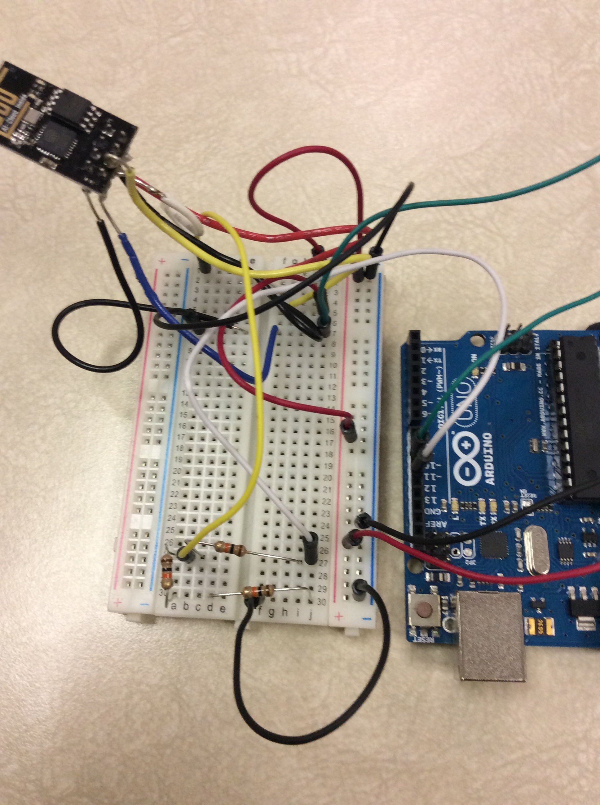
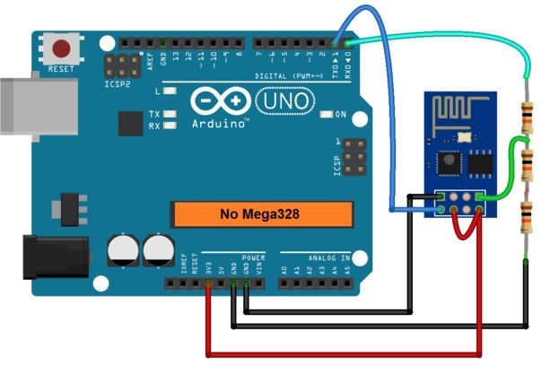

Hardware
Once you're done updating your esp8266, it's time to connect it to the arduino.
Plug everything into a breadboard. The end result is a mess of wires like the one shown in the photo.

After that, you should plug things in to the arduino. When plugging things into the arudino, keep in mind that the esp8266 uses 3.3V, but the arduino uses 5V. This means that you should plug in the power for the esp8266 into a 3.3V power supply. While you can use the one built into the arduino (like I did), it's not a very good idea as the esp8266 can pull A LOT of current sometimes. Also, the RX and TX pins will be 5V as well. This means you'll have to have a voltage divider on the RX pins. Here's a schematic for it:

Here's a schematic for the pins on the esp8266:

For clarification, here's a table listing wiring:
| Pin on ESP8266 | Pin on Arduino |
| VCC | 3.3V |
| RX | Voltage divider, then to pin 11 |
| CH_PD | 3.3V |
| TX | pin 10 |
| GND | GND |
You should now be ready for the next step, software!